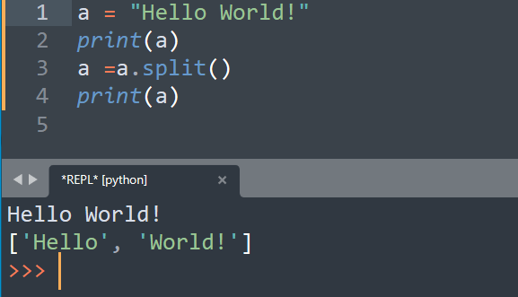

Cписок (list) є типом даних, який зберігає набір або послідовність елементів.
Кожен елемент списку має свій індекс і отримувати доступ до будь-якого елемента списку можна через його індекс.
У Python використовується система індексації, починаючи з нуля.
Функція list використовується для того, щоб розбивати рядок на окремі символи.
Метод .split() розділяє основний рядок по роздільнику та повертає список рядків.